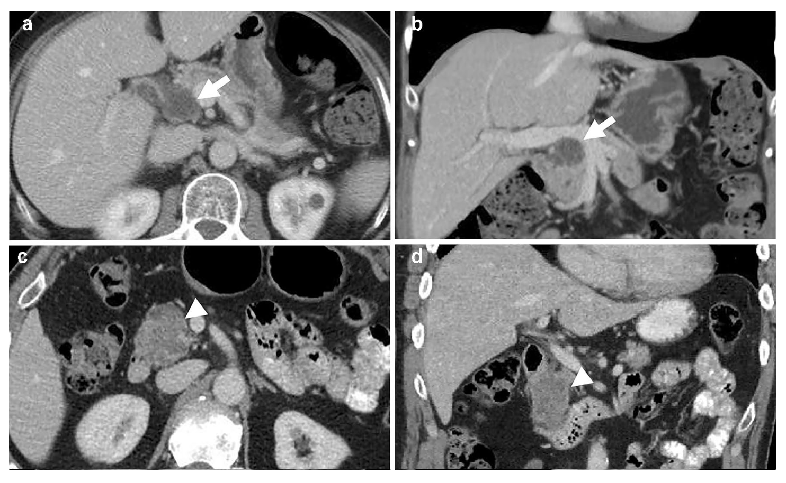

Pancreatic Cysts Prediction Project
My first research project. I learned a lot!
 Image sourced from our publication (Awe et al., 2022)
This project was my first research experience. This project was through the Informatics Skunkworks. Please consider reading our publication below to get a complete picture of what we were able to accomplish with this project.
My Experience
For this project, I had the opportunity to work with many great people across different fields. Dr. Mingren Shen, a graduate student at the time, was my primary mentor for this project. We also met frequently with Dr. Dane Morgan, Dr. Meg Lubner, Dr. Adam Awe, and others throughout the project to give updates on our findings and receive guidance on the medical and technical challenges we faced. Additionally, I had the opportunity to work alongside fellow undergraduate students over the course of this project. This project was my first experience with many techniques and technologies such as Python, Scikit learn, machine learning, oversampling, undersampling, and communicating my results in an effective manner. My future research projects and work experiences would build upon the experiences and learnings I took away from this project.